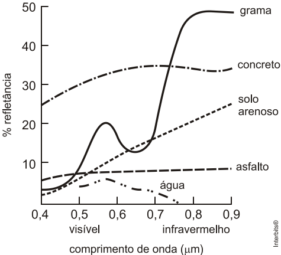
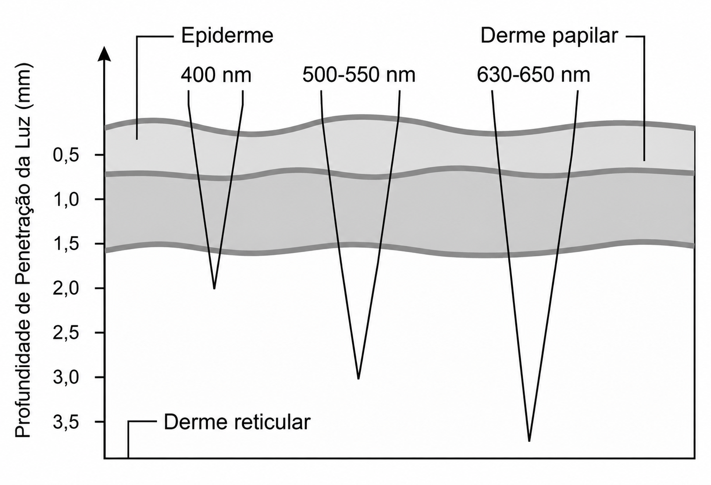

Marque uma alternativa em cada questão e finalize o teste.
Em um dia de praia, uma pessoa pode permanecer várias horas exposta ao Sol. Mesmo sem perceber imediatamente, essa exposição pode provocar alterações na pele, como vermelhidão, ardência e, em casos mais intensos, queimaduras. Esses efeitos estão relacionados às características das diferentes regiões do espectro eletromagnético. A situação descrita está principalmente relacionada a qual região do espectro eletromagnético?
Em determinados procedimentos médicos, o uso de lasers permite realizar intervenções em regiões muito pequenas do corpo, reduzindo a ação sobre tecidos que não precisam ser tratados. Para que diferentes procedimentos possam ser realizados, os equipamentos utilizados nessas aplicações podem apresentar diferentes características físicas da radiação emitida. Um laboratório está desenvolvendo um novo equipamento para uso médico e precisa modificar uma de suas características de emissão. Qual alteração deve ser realizada para aumentar a potência do feixe?
O monitoramento de fenômenos sísmicos em regiões oceânicas é um desafio, pois a instalação de equipamentos diretamente no fundo do mar pode ser complexa e de alto custo. Um estudo publicado em 2025 investigou o uso de veículos autônomos para registrar sinais acústicos no oceano, mostrando que esses equipamentos podem contribuir para o acompanhamento de eventos sísmicos. Além do monitoramento sísmico, sistemas acústicos são utilizados em veículos submersos para determinar a posição de obstáculos e estimar a distância até o fundo do oceano. Um equipamento emite um pulso sonoro e registra o instante em que o sinal refletido retorna ao sensor. Considere que, em determinada situação, a velocidade do som na água seja de 1 500 m/s . O equipamento emite um pulso e recebe seu eco 0,80 s depois. Além disso, o sistema apresenta um atraso eletrônico de 0,10 s entre a chegada do sinal ao sensor e o registro do retorno. Desprezando outros efeitos, a distância entre o equipamento e a superfície que refletiu o pulso é, aproximadamente,
O processo de interpretação de imagens capturadas por sensores instalados a bordo de satélites que imageiam determinadas faixas ou bandas do espectro de radiação eletromagnética (REM) baseia-se na interação dessa radiação com os objetos presentes sobre a superfície terrestre. Uma das formas de avaliar essa interação é por meio da quantidade de energia e por meio da quantidade de energia refletida pelos objetos. A relação entre a reflectância de um dado objeto e o comprimento de onda da REM é conhecida como curva de comportamento espectral ou assinatura espectral do objeto, como mostrado na figura, para objetos comuns na superfície terrestre. De acordo com as curvas de assinatura espectral apresentadas na figura, para que se obtenha a melhor discriminação dos alvos mostrados, convém selecionar a banda correspondente a que comprimento de onda em micrômetros (μ m)?

A costa do Chile está localizada em uma região de intensa atividade sísmica. Em 2026, novos tremores registrados no país reforçaram a importância do monitoramento de fenômenos que podem afetar áreas costeiras. Quando um terremoto ocorre no fundo do oceano e provoca o deslocamento de uma grande quantidade de água, ondas podem se propagar por longas distâncias, sendo acompanhadas por sistemas de alerta. Considere uma situação hipotética em que um desses eventos origine ondas com comprimento de onda de 200 km , que se propagam em uma região do oceano cuja profundidade é de 4 km . Para ondas desse tipo, em que o comprimento de onda é muito maior que a profundidade da água, sua velocidade de propagação pode ser aproximada por: em que g=10 m/s² é a aceleração da 𝑣 = 𝑔𝑑gravidade e d é a profundidade da água. Sabendo-se que o fenômeno consiste em uma série de ondas sucessivas, qual é o valor mais próximo do intervalo de tempo entre duas ondas consecutivas?
A terapia fotodinâmica é um tratamento que utiliza luz para cura de câncer através da excitação de moléculas medicamentosas, que promovem a desestruturação das células tumorais. Para a eficácia do tratamento, é necessária a iluminação na região do tecido a ser tratado. Em geral, as moléculas medicamentosas absorvem as frequências mais altas. Por isso, as intervenções cutâneas são limitadas pela penetração da luz visível, conforme a figura: A profundidade de até 2 mm em que o tratamento cutâneo é eficiente se justifica porque a luz de

Em hospitais e clínicas, a ultrassonografia é utilizada para investigar órgãos e tecidos sem o uso de radiação ionizante. O exame pode ser realizado em tempo real e também é empregado em situações nas quais é necessário localizar estruturas internas com rapidez, como na avaliação abdominal, vascular e musculoesquelética. Durante um exame, o transdutor emite pulsos de ultrassom que se propagam pelo corpo. Parte desses pulsos é refletida quando encontra uma interface entre tecidos diferentes e retorna ao transdutor. O equipamento utiliza essas informações para determinar a posição das estruturas internas. Para determinar a distância entre duas estruturas do corpo, as duas variáveis físicas imprescindíveis nesse processo são
O fenômeno da levitação de corpos ocorre, na Terra, quando a força gravitacional é equilibrada, fazendo com que um objeto paire no ar. O som pode fazer objetos levitarem, fenômeno chamado de levitação acústica. Um levitador acústico deve conter um transdutor, que é uma superfície vibratória que emite o som, e um refletor. Nesse dispositivo, o transdutor fica localizado na base, enquanto o refletor é colocado acima dele, de modo que o objeto a ser levitado permaneça entre os dois. Ambos possuem superfícies côncavas para focalizar o som. Para que haja a levitação de um objeto colocado entre o transdutor e o refletor, a força que equilibra o peso do objeto deve ser decorrente da
O naufrágio do Galeão Santíssimo Sacramento, ocorrido em 1668 na costa da Bahia, é considerado um importante sítio de interesse para a arqueologia subaquática brasileira. Estudos realizados no local buscam identificar e documentar estruturas, objetos e outros vestígios preservados no fundo do mar. Em uma pesquisa desse tipo, os especialistas precisam obter informações sobre materiais que se encontram abaixo da superfície da água, mesmo quando a visibilidade é insuficiente para a observação direta. Para isso, podem ser empregados equipamentos capazes de emitir sinais e analisar o retorno produzido após a interação com as estruturas submersas. Nesse contexto, o uso de sinais sonoros é mais adequado que o de sinais luminosos porque a: